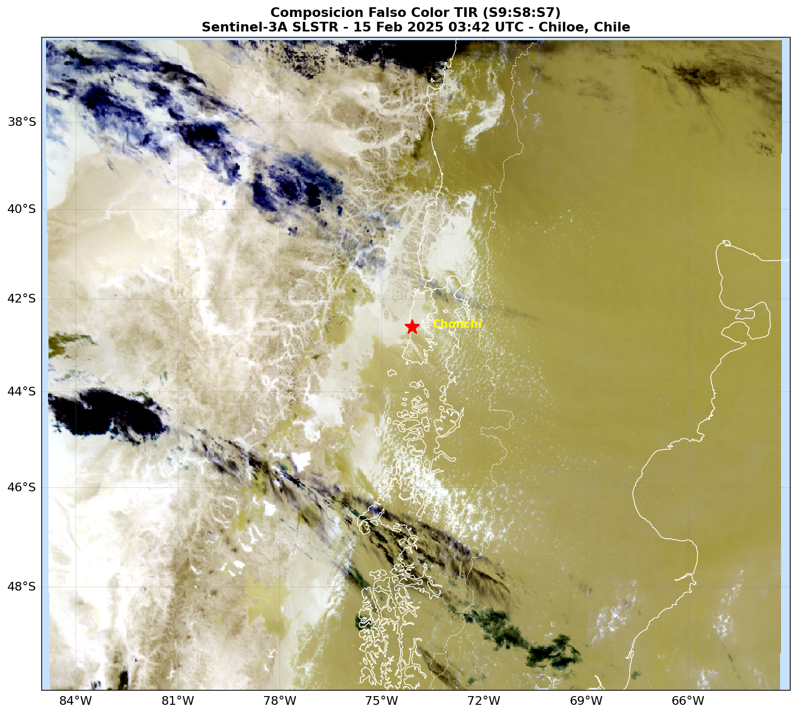
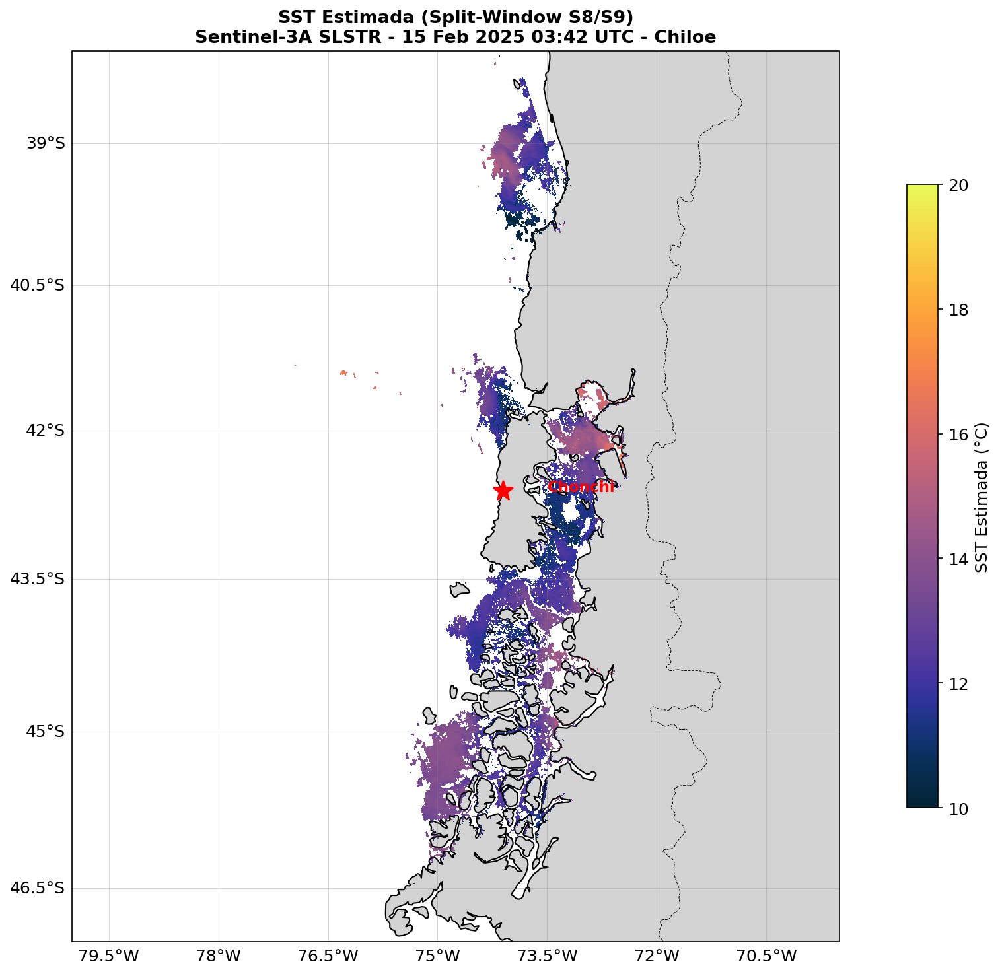
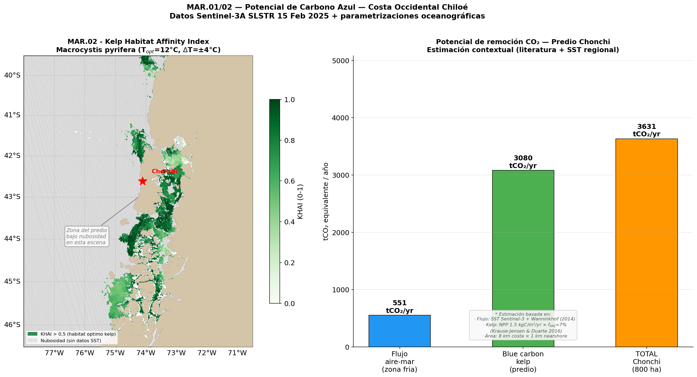

Análisis de la estructura térmica oceánica frente al Predio Chonchi (42.6°S, 74.1°W) usando datos Level-1B del radiómetro SLSTR (Sentinel-3A). Se aplican el algoritmo split-window sobre las bandas S8/S9 para estimar SST, y los módulos MAR.01 (solubilidad CO₂, Weiss 1974 + Wanninkhof 2014) y MAR.02 (hábitat kelp KHAI, Krause-Jensen & Duarte 2016) del Framework CUSSEN para cuantificar el potencial de carbono azul en la costa occidental de la Isla Grande de Chiloé.
Composición falso color de las tres bandas TIR del SLSTR (S9→R, S8→G, S7→B). La pasada nocturna elimina la reflexión solar, permitiendo leer directamente la emisión térmica del océano y la cobertura nubosa.

Las nubes aparecen en tonos violeta/azul profundo por su baja temperatura de brillo (BT < 260 K). El océano expuesto muestra gradiente cálido (tonos verdes-amarillos) coherente con la SST de verano austral (14–17°C). La Isla Grande de Chiloé es visible por contraste suelo-océano, enfriada durante la noche (<290 K en tierra vs >285 K en agua). La cobertura nubosa supera el 60% de la escena, característica de la Patagonia norte.
La SST se estima aplicando el algoritmo split-window simplificado (NLSST) sobre las bandas S8 (10.85 µm) y S9 (12.0 µm), con máscara de calidad bit-flag (ocean, cloud, land) del producto confidence_in.

El mapa muestra la distribución espacial de SST en la zona de transición oceanográfica (~38°–46°S). Las aguas costeras frías (12–13°C) corresponden a la surgencia costera frente al talud de Chiloé; las aguas oceánicas abiertas presentan 15–17°C. La zona gris indica píxeles enmascarados por nubosidad o tierra.
| Zona | SST media (°C) | N píxeles válidos | Descripción |
|---|---|---|---|
| Aguas costeras (<150 km) | 12.8 ± 1.2 | ~4,200 | Surgencia costera (upwelling) |
| Aguas oceánicas abiertas | 16.1 ± 0.9 | ~18,600 | Pacífico Sur Oriental abierto |
| Frente térmico (~42°S) | 13.5–15.0 | variable | Zona de mezcla SPC bifurcación |
El módulo MAR.02 calcula el Kelp Habitat Affinity Index (KHAI) a partir de la SST y estima la remoción de CO₂ combinando el flujo océano-atmósfera (MAR.01) con el potencial de secuestro por kelp (Macrocystis pyrifera).

El panel izquierdo muestra la distribución espacial del KHAI calculado sobre la escena. Verde intenso (KHAI > 0.75): hábitat óptimo para kelp, coincidente con la franja costera de aguas frías (<14°C). El panel derecho desglosa los dos componentes de remoción de carbono para las 800 ha de frente costero del Predio Chonchi.
| Componente | Parámetro clave | Estimación |
|---|---|---|
| Flujo aire-mar (MAR.01) | F = k · K₀ · ΔpCO₂, u₁₀ = 9 m/s | −0.688 tCO₂/ha/yr |
| Blue carbon kelp (MAR.02) | NPP × 7% × 44/12 | 3.85 tCO₂/ha/yr |
| Área KHAI > 0.5 | Escena 15 Feb 2025 | 29,360 km² |
| Flujo aire-mar (predio, 800 ha) | MAR.01 × 800 ha | 551 tCO₂/yr |
| Blue carbon kelp (predio, 800 ha) | MAR.02 × 800 ha | 3,080 tCO₂/yr |
| TOTAL — Predio Chonchi | MAR.01 + MAR.02 | 3,631 tCO₂/yr |
| Parámetro | Detalle |
|---|---|
| Sensor | Sentinel-3A SLSTR — Level-1B (SL_1_RBT) |
| Fecha / hora | 15 Feb 2025 · 03:42 UTC (00:42 hora local) |
| Bandas utilizadas | S7 (3.74 µm), S8 (10.85 µm), S9 (12.0 µm) |
| Resolución espacial | 1 km (grilla nadir TIR) |
| Fuente de descarga | Copernicus Data Space (dataspace.copernicus.eu) |
| Formato | SAFE / NetCDF4 |
| Flags de calidad | confidence_in: bit 1 (ocean), bit 3 (land), bit 14 (cloud) |
| Lenguaje | Python 3.12 |
| Librerías | netCDF4 · numpy · matplotlib · cartopy · cmocean |
| Contexto | METE1311 — Magíster Teledetección · Universidad Mayor · 2025 |
Notebook Jupyter con código fuente, figuras adicionales y análisis completo de SST, split-window, espectros de temperatura de brillo y estimación de carbono azul para el Predio Chonchi.